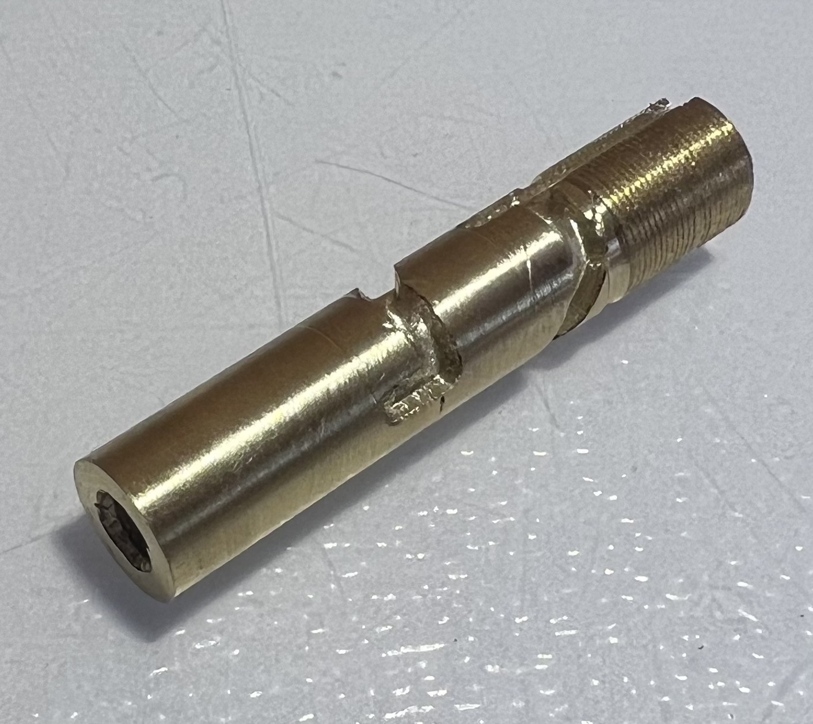

~ Custom Twist Pen ~
- Designed to protect nib if dropped
- Smooth movement and secure locking
- Uses replacable Zebra F301 cartridges
- Hand-engraved design
- Machined on manual Sherline lathe
- Designed and drafted on paper
